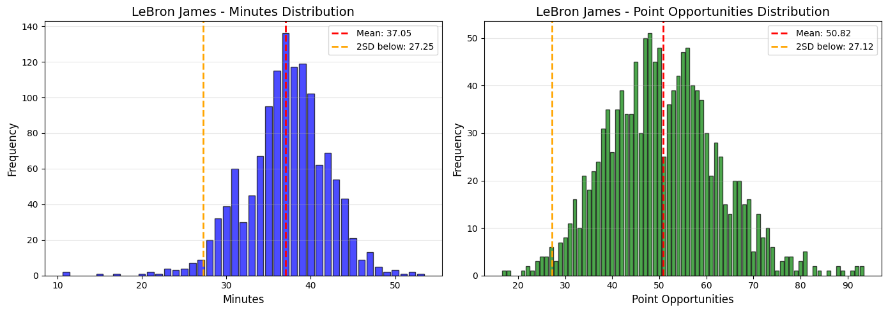
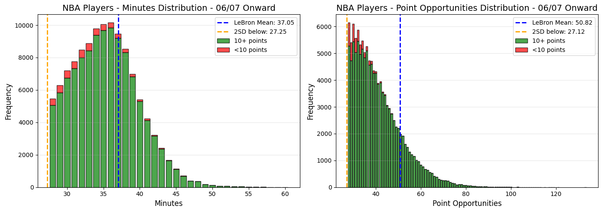
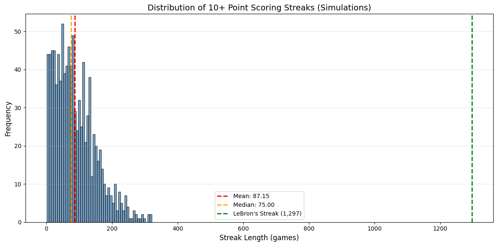
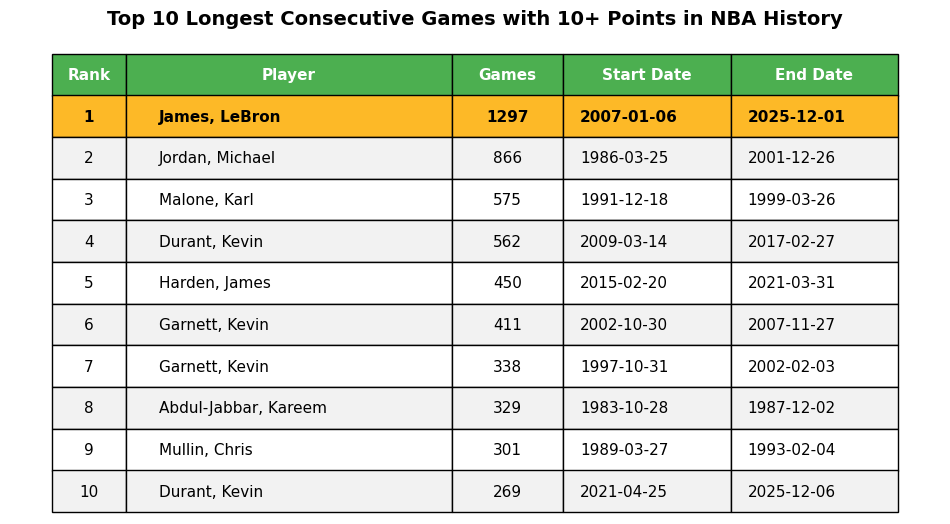

Ethan Ewing 12/6/2025
View Code on GitHubOn December 4, 2025, LeBron James's 10-point scoring streak came to an end. This streak lasted 1,297 regular-season games and dates back to January 6, 2007. Scoring 10 points in an NBA game is nothing to write home about, however, 1,297 games over 20 seasons is a remarkably long time in the NBA. To put this in perspective, Cooper Flagg, the first-overall pick in the 2025 NBA Draft, was born 17 days before this scoring streak started.
LeBron James averages 27 points per game for his 23-year career, thus a game with 10 points would be considered an off-night by his standards. This potentially makes this scoring streak feel less impressive than it is. To justify how impressive this feat is, I wanted to analyze the game logs for LeBron and the rest of the league to understand how LeBron was able to achieve this record which will likely never be broken.
Using the NBA API's League Game Finder endpoint, I pulled every game log for every player from the 2006-07 season to the 2025-26 season at the time of writing. Using Python's Pandas library, I created a dataframe for LeBron's game logs during his 1,297-game streak. I also created a dataframe for every other game log during this time.
Simply put; to score points, you need to be on the floor, and you need to be attempting shots. Thus, I analyzed LeBron's minutes and point opportunities for these 1,297 games. Point opportunities, meaning the number of points that would be scored if every shot was a make. Which gives us a formula of:
3 × (3-point attempts) + 2 × (2-point attempts) + 1 × (free throw attempts)
Looking at the distribution of these two statistics, we can see that they are both mostly normal distributions.
My goal was to see how other players perform when given the same opportunity as LeBron. For every player game log since the beginning of the 06/07 season, I did the same calculation for point opportunities. To only consider games where players had similar opportunities as LeBron did over his 1,297 games, I removed games that had point opportunity or minute totals with a z-score of -2 or lower based on the mean and standard deviation for LeBron in these statistics.
From this we get a total of 119,187 games and players scored 10 points or more in 114,404 of these games yielding a 95.99% success rate.
So, when a player gets the same opportunity as LeBron, they score 10 points a 95.99% of the time. Compound this probability 1,297 times returns 8.49 × 10⁻²³ percent. This means that on average, when given the same opportunities as LeBron, it would be virtually impossible to replicate this streak.
There is a caveat with this analysis though. Looking at the distribution of the other NBA players' minutes and point opportunities distributions, we can see that they are skewed to the right, away from this -2 z-score (from LeBron's distribution) threshold that we set. I also divided the histogram bars to show which games players scored 10+ points in green and which games players failed to meet this mark in red. We can see that a large portion of the red is very close to that -2 z-score mark. LeBron is 8th all-time in usage rate, even if we try to set a floor for minutes and point opportunities for the rest of the NBA, it won't fully replicate LeBron's numbers.
This led me to attempt to simulate what it would be like if we put other players in the exact same position as LeBron for 1,297 games. The goal was to simulate scoring 10 points in 1,297 consecutive games. For each simulated game, I randomly sampled a minute total and a point opportunity total from LeBron's scoring streak. Then, I would find a game in which a player had within one minute of that sampled minute total, and within one point of that sampled point opportunity total. Next, I would remove this game from the dataframe and check if the player had scored 10+ points in that game. If so, simulate another game. If not, end the simulation.
I ran this simulation 1,000 times and the longest streak was 321 games.
Overall, this record set by LeBron will most likely not be broken. The longevity of a career it requires is too much to ask for almost all players. 1,297 games is over 15 full seasons. Considering injuries and the league heading in a direction where stars are missing a handful of games per year to manage workloads, I am not sure if anyone will catch LeBron.
